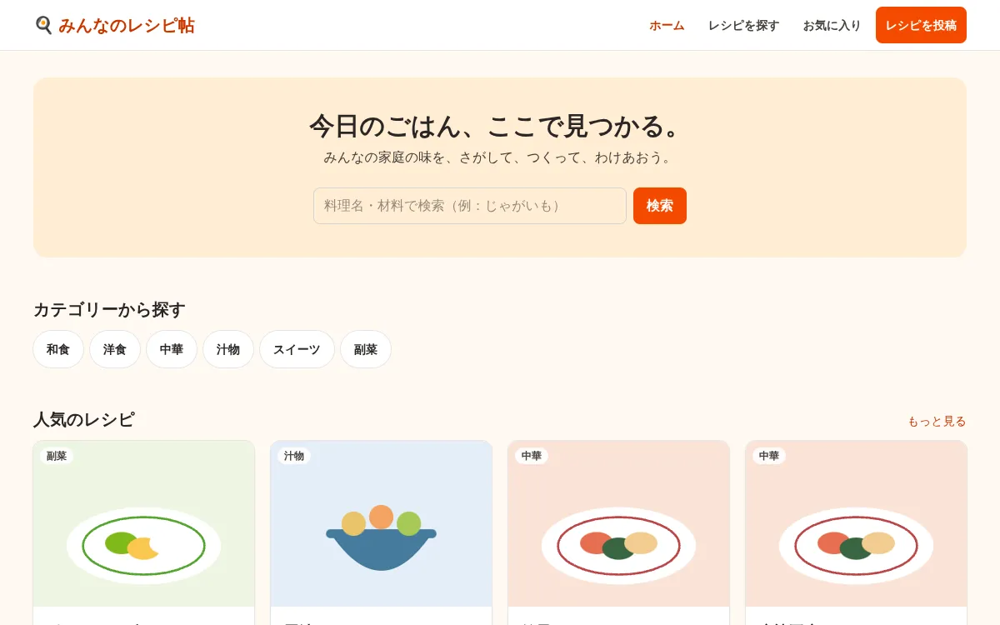
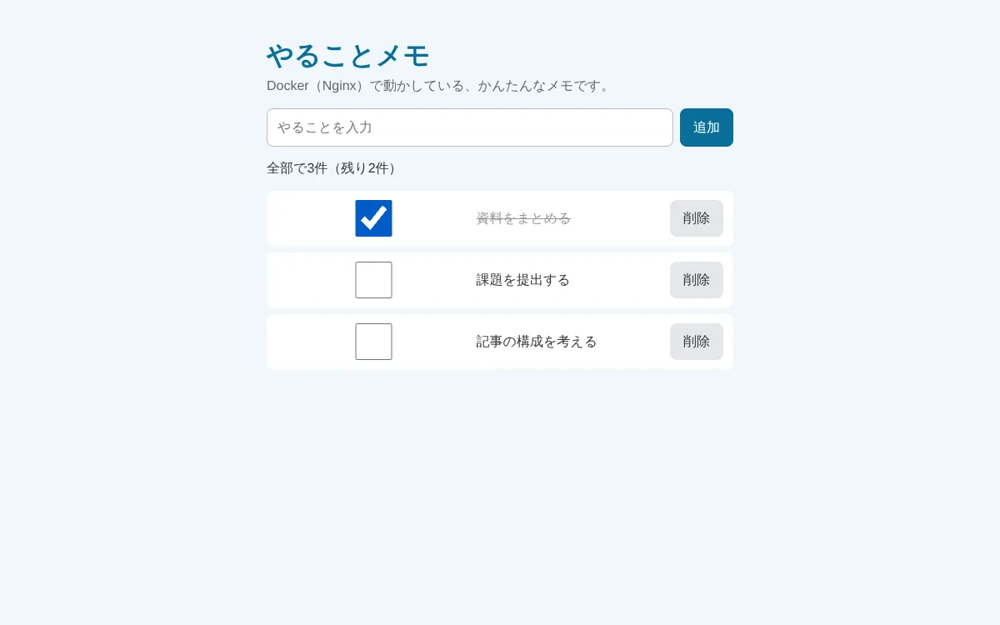

書く・伝える
- SEOライティング
- AIO（AI検索に選ばれるための最適化）
- 記事の構成・校正
フロントエンド＋AI活用コース（第5ヶ月）の課題です。すべてAIと協働して作りました。

レシピを探して、評価して、投稿できるサイト。高度な検索、お気に入り、コメントと評価、投稿フォームまで作り、Vercel で公開しました。

HTML・CSS・JavaScript のメモアプリを、Nginx の Docker イメージに入れて動かしました。Docker Compose でも起動できます。
ブランチを切り、プルリクエストを作ってマージするまでの流れを実践しました。
本の一覧・検索・追加・編集・削除と、読書ステータス・評価・メモの管理。
TODO・進行中・完了の3列を、ドラッグ＆ドロップで動かせるボード。
カートへの追加・数量の増減・削除。4段階のプロンプトで改善しました。
大阪・東京・札幌・那覇の今の天気と、3日間の予報を表示します。
note のRSSを読み込み、記事のタイトル・公開日・概要を一覧にします。
記事の執筆、サイト改修のご相談など、お気軽にどうぞ。